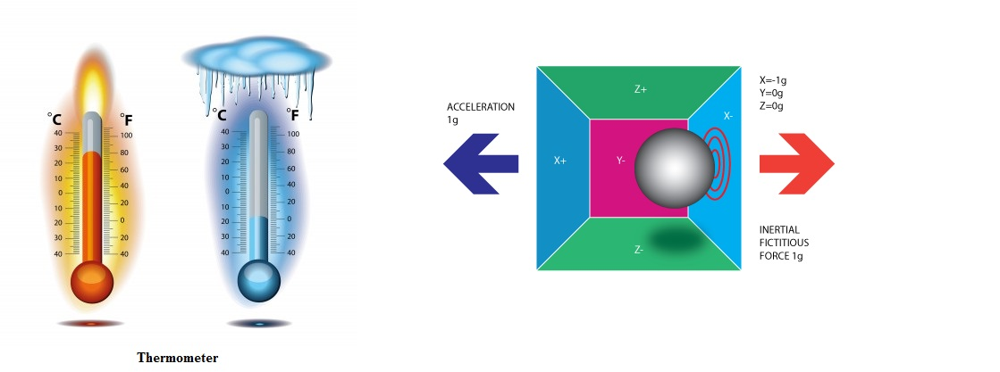

Data Display
The box on the left below displays the ambient temperature. The box on the right displays data received from the accelerometer.
Ambient Temp:
reloading °C
reloading °C
ACCELEROMETER:
reloading
reloading

Imagine getting your room ambient temperature and and accelerometer status on your mobile device no matter where you are!
In this demo, the temperature is read out from the washer (temperature sensor on the LP) and sent wirelessly via SimpleLink CC3200 to your mobile device (first display shown).
When the LaunchPad is shaken, it simulates the dryer spinning. The message “dryer started” is sent to your mobile device (second display shown).
Did you know?
CC3200 has a rich peripheral set including SPI, UART, I2C, I2S, SDMMC, 4Channel ADC, 4 PWMs and built-in power management are included.